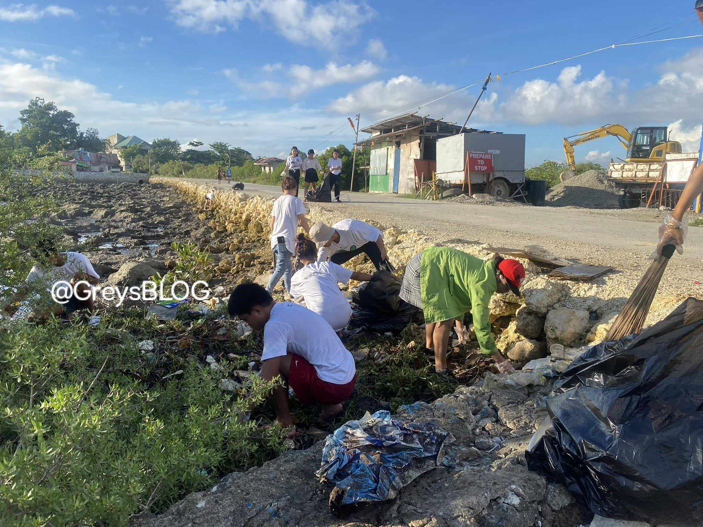

HISTORY
The Origin Behind Cordova's Name and it's Barangay
environment


hey! cordovahon, our beaches need us. lets Clean Cordova together!to protect and maintan cleanliness
keeping cordova beauty
hey! cordovahon, our beaches need us. lets Clean Cordova together!
why community coastal clean up is important?
In Cordova, mangroves are homes for sea creatures. But sometimes, trash hurts them. needed to cleaning up to keep our mangroves strong. It makes our place safe and the mangroves happy.
BANATAYAN BAY CORDOVA: OUR HOME NATURE.
In Cordova, Philippines, Bantayan Bay is a special place full of colorful reefs and fish.
People fish here for jobs and food but there's too much fishing and trash in the water.
Some people are fixing this. They're teaching better fishing and cleaning up the bay. This helps keep our home beautiful and the fish happy
In Cordova, Philippines, Bantayan Bay is a special place full of colorful reefs and fish.
People fish here for jobs and food but there's too much fishing and trash in the water.
Some people are fixing this. They're teaching better fishing and cleaning up the bay. This helps keep our home beautiful and the fish happy